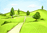

84
Je suis le chemin vers le sud pendant un certain temps. Après plusieurs détours et plusieurs vallons, j'arrive à la fin de la route aux pieds des collines. Il semble y avoir une caverne dans les collines. Peut-être devrais-je aller voir ce qu'il y a dedans. Mais je ne sais pas pourquoi, cette caverne me fait peur! Sinon, je pourrais contourner les collines vers l'ouest où il y a une forêt ou encore vers l'est où il y a une grande plaine. Je pourrais vérifier s'il y a un passage vers le sud et vers l'autre côté des collines.
|